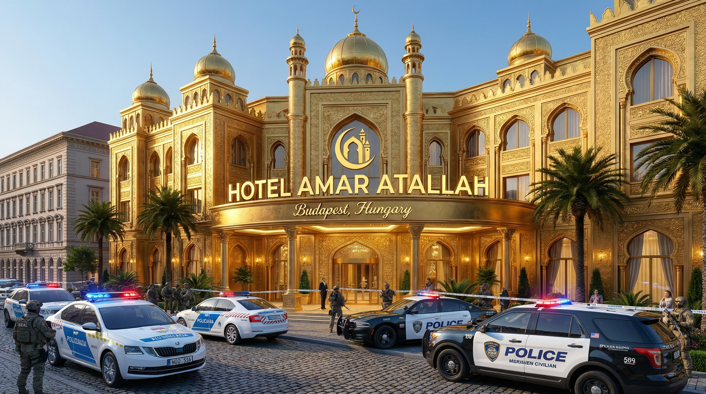
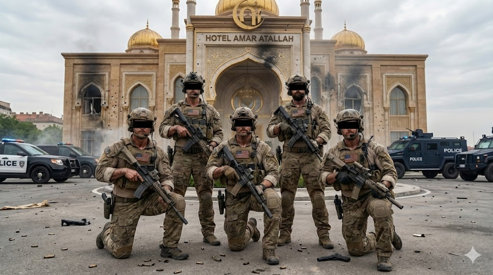
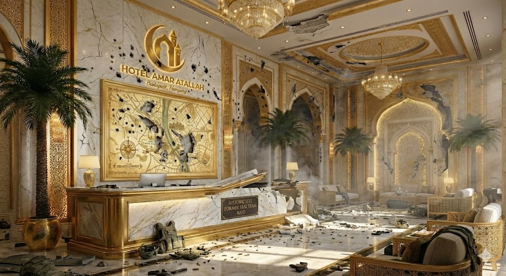
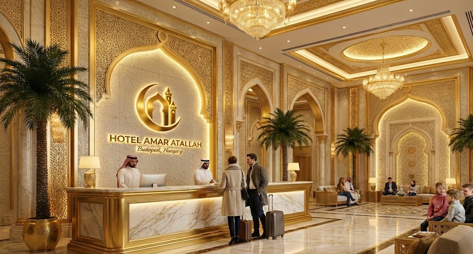
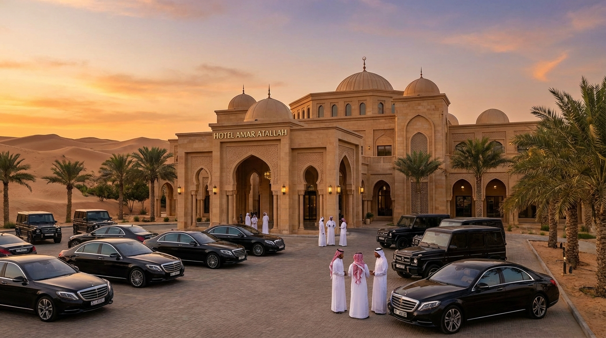

A Hotel Amar Atallah története messze nem egy átlagos luxusszálloda meséje. Falaink között egykor a világ legveszélyesebb titkai rejtőztek. Az épületegyüttes előző tulajdonosa egy kiterjedt alvilági hálózatot irányító bűnöző volt, aki a hotel lenyűgöző arabeszk falait és luxusát csupán álcaként használta sötét üzelmeihez. A luxus mögött egy bevehetetlen erőd húzódott meg.

A sorsdöntő fordulat egy éjszakai, szigorúan titkos katonai művelettel érkezett el. Egy elit SEAL Team egység kapta a feladatot, hogy behatoljon a komplexumba és kihozza a célszemélyt. A bevetésen részt vevő operátorok – Ábel, Laci, Olivér, Tamás és Vencel – nevei egy későbbi adatszivárgás (leak) során váltak nyilvánossá, de a küldetést hibátlanul, másodpercre pontosan hajtották végre. A célszemélyt elfogták, a bűnszervezetet felszámolták.

A por elültével azonban valami váratlan történt. Laci, az osztag egyik tagja, a golyónyomok és a káosz ellenére meglátta a hely valódi potenciálját. A sivatag csendje, a lenyűgöző építészeti megoldások és a hely szelleme teljesen magával ragadta. Nem hagyhatta, hogy ez a mestermű az enyészeté legyen: úgy döntött, megvásárolja az ingatlant.

Az Amerikai Egyesült Államok kormánya – elismerve az egység hősiességét és a hely új, békés célú hasznosítását – jelentős támogatást nyújtott a projekt alapjaihoz. Ebből a forrásból, valamint egy új, tiszta vízióból indult meg a hotel teljes, state-of-the-art felújítása.
{kind=link}

Ma a Hotel Amar Atallah már nem egy rejtekhely, hanem a béke, a luxus és az erő szimbóluma. Egy birodalom, amit a nulláról, a saját kezünkkel építettünk újjá.

A kapuink hivatalosan április 12-én nyílnak meg újra a nagyközönség előtt. Lépjen be a történelembe!